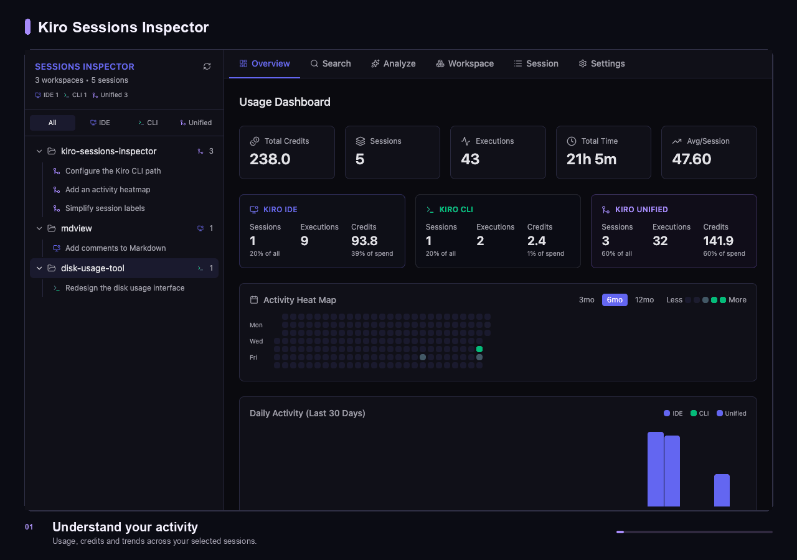

A closer look
From conversation to context.
Explore your activity. Inspect what happened. Find the decision you need.
A short tour across three workspaces, with CLI v2, IDE, and unified sessions.
33 seconds / 8 scenes / 1280 × 900


- 01 / OverviewSee the bigger pictureActivity, credits, and trends.
- 02 / CLI v2Revisit CLI historyA legacy session in disk-usage-tool.
- 03 / IDEExplore another workspaceAn earlier IDE conversation in mdview.
- 04 / UnifiedFollow the conversationMessages alongside tool calls.
- 05 / InspectLook inside a tool callCommand, output, and status.
- 06 / SearchFind an earlier decisionFull-text search with highlights.
- 07 / ContextPick up the threadJump directly to a result.
- 08 / AnalyzeReflect on your workflowChoose a time window and tone.